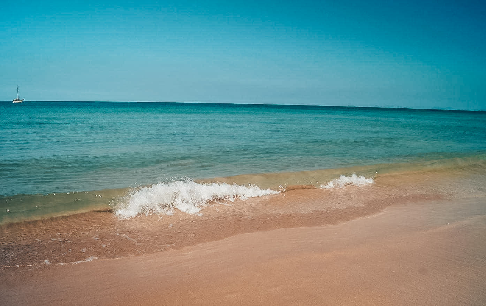

หาดคลองโขง กระบี่ แผนที่
ถ้าใครมีโอกาสมาเที่ยวกระบี่ แล้วอย่าลืมแวะมาเที่ยวหาดคลองโขง เกาะลันตากันด้วยนะครับ หาดทรายเศษปะการังแปลกตา/p>


สวัสดีครับ..พอดีผมได้มีโอกาสไปเที่ยวกระบี่มาครับ และได้ไปเที่ยวที่หาดคลองโขงมาเลยจะมารีวิวให้ชมกันครับว่า มีความน่าสนใจยังไงและสามารถเดินทางไปยังไงได้บ้าง สำหรับการเดินทางนั้นผมเริ่มต้นจากที่สนามบินกระบี่ครับ ก็คือลงเครื่องเช่ารถแล้วก็ขับตรงมาที่เกาะลันตาน้อยได้เลย โดยต้องมีการข้ามแพขนานยนต์สองครั้ง ควรหลีกเลี่ยงช่วงเทศกาล หรือเผื่อเวลาเดินทางเพราะจะมีคิวรอลงแพขนานยนต์ค่อนข้างมาก การเดินทางไปเกาะลันตามีดังนี้
"หาดคลองโขง" เป็นหาดเดียวบนเกาะลันตาใหญ่ที่หาดทรายปะปนไปกับเศษปะการังแปลกตา ตัวหาดคลองโขงตั้งอยู่ทางทิศตะวันตกมีความยาวราว 3 กิโลเมตร อยู่ถัดออกมาจากหาดพระแอะหรือหาดลองบีช หาดคลองโขงนั้นถือว่าเป็นอีกหาดที่เงียบสงบไม่พลุกพล่านบนเกาะลันตา ส่วนมากนักท่องเที่ยวจะเป็นแนวแบคเพคเกอร์ ช่วงที่เหมาะกับการเล่นน้ำคือช่วงน้ำขึ้น ส่วนช่วงน้ำลดหาดคลองโขงจะปรากฏให้เห็นแนวตะกอนดินจำนวนมาก ช่วงที่น้ำลดนี้จะมีชาวบ้านออกมาเก็บหอย สามารถมาชมวิถีชีวิตกันได้

เป็นอีกหาดที่เงียบสงบไม่พลุกพล่าน ทำให้ได้รู้สึกถึงการผ่อนคลาย
พระอาทิตย์ตกยามเย็น
นั่งจิบน้ำชมวิวพระอาทิตย์ตก แบบชิวๆ

ส่วนมากนักท่องเที่ยวจะเป็นแนวแบ็คแพ็กเกอร์ ช่วงที่เหมาะกับการเล่นน้ำคือช่วงน้ำขึ้น ส่วนช่วงน้ำลดหาดคลองโขงจะปรากฏให้เห็นแนวตะกอนดินจำนวนมาก และชาวบ้านจะออกมาเก็บหอย ซึ่งนักท่องเที่ยวสามารถชมวิถีชีวิตเหล่านี้ได้อย่างใกล้ชิด
ถ้าใครมีโอกาสมาเที่ยวกระบี่ แล้วอย่าลืมแวะมาเที่ยวหาดคลองโขง เกาะลันตากันด้วยนะครับ หาดทรายเศษปะการังแปลกตา/p>